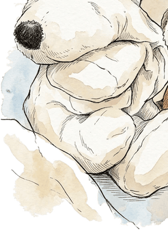

Aller au contenu
Les Doudous et l'Étoile
La fille au stylo rose
Menu
Accueil
Le livre
L'univers
L'Étoile
Les astuces des Doudous
Oups !
Doudou Grosse Tête est tombé sur le côté… Cette page n’existe pas.

z
z
z
Revenir à l’accueil